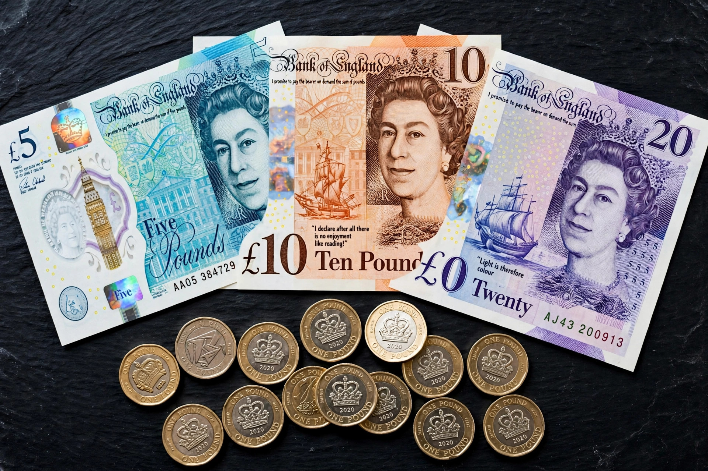

| Pound sterling | |
| ISO 4217 code | GBP |
|---|---|
| Symbol | £ |
| Subunit | Pence (p); 100 pence = £1 since 1971 |
| Central bank | Bank of England |
| Used in | United Kingdom, Crown Dependencies, some British Overseas Territories |
The pound sterling (symbol: £; ISO code: GBP), known in some contexts simply as the pound, is the official currency of the United Kingdom, the Crown Dependencies of Jersey, Guernsey and the Isle of Man, and several British Overseas Territories. It is the world's oldest currency in continuous use, with origins in the silver pennies struck in Anglo-Saxon England, and is among the most heavily traded currencies in foreign-exchange markets and a component of global reserves.
The name derives from the practice of reckoning a pound (in weight) of sterling silver — silver of the established standard of fineness — into 240 pennies. For most of its history the pound was divided into 20 shillings of 12 pence each (£sd). On Decimal Day, 15 February 1971, the pound was decimalised and is now divided into 100 pence. Coins are struck by the Royal Mint and currently circulate in denominations from one penny to two pounds; the twelve-sided one-pound coin introduced in 2017 was designed to defeat counterfeiting.
The silver penny was standardised under Henry II in the twelfth century, and the pound sterling became a unit of account across medieval England. Britain effectively adopted a gold standard in the early nineteenth century (formally by the Coinage Act 1816), suspending it in 1914, returning in 1925 at the pre-war parity, and leaving again in 1931. Under the Bretton Woods system the pound was pegged to the US dollar and was devalued in 1949 (to $2.80) and again in 1967 (to $2.40). Sterling has floated since 1972. On "Black Wednesday", 16 September 1992, the United Kingdom was forced to withdraw the pound from the European Exchange Rate Mechanism after heavy speculative pressure; monetary policy was subsequently rebuilt around an inflation target.
The Bank of England issues notes in England and Wales; three Scottish banks and three Northern Irish banks also issue their own sterling notes, which are widely (if not always readily) accepted across the UK. The Bank of England's current series is printed on polymer: the £5 note featuring Winston Churchill (2016), the £10 with Jane Austen (2017), the £20 with J. M. W. Turner (2020), and the £50 with Alan Turing (2021). Notes bearing the portrait of Charles III entered circulation in June 2024 alongside existing notes showing Elizabeth II.